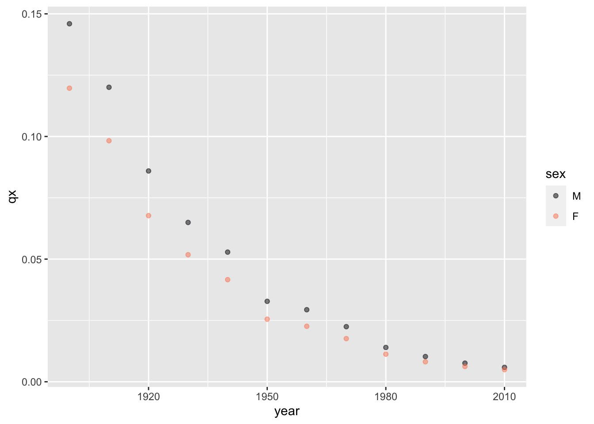
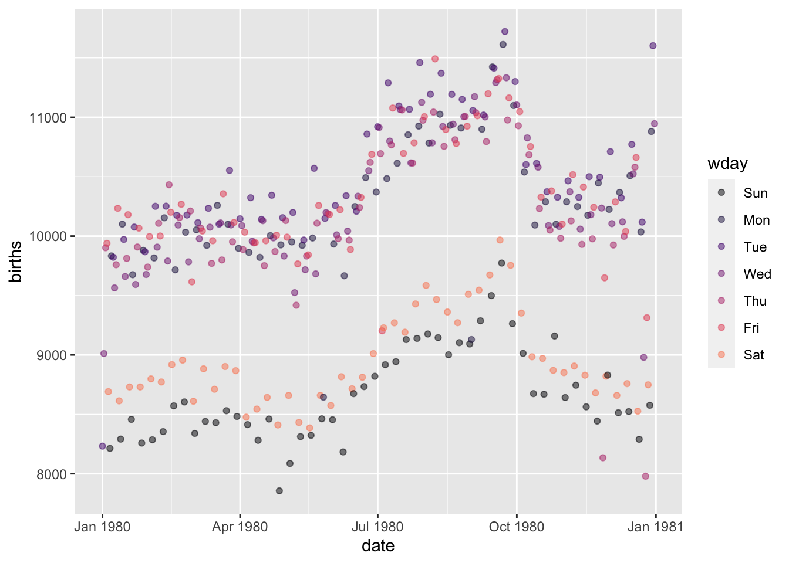
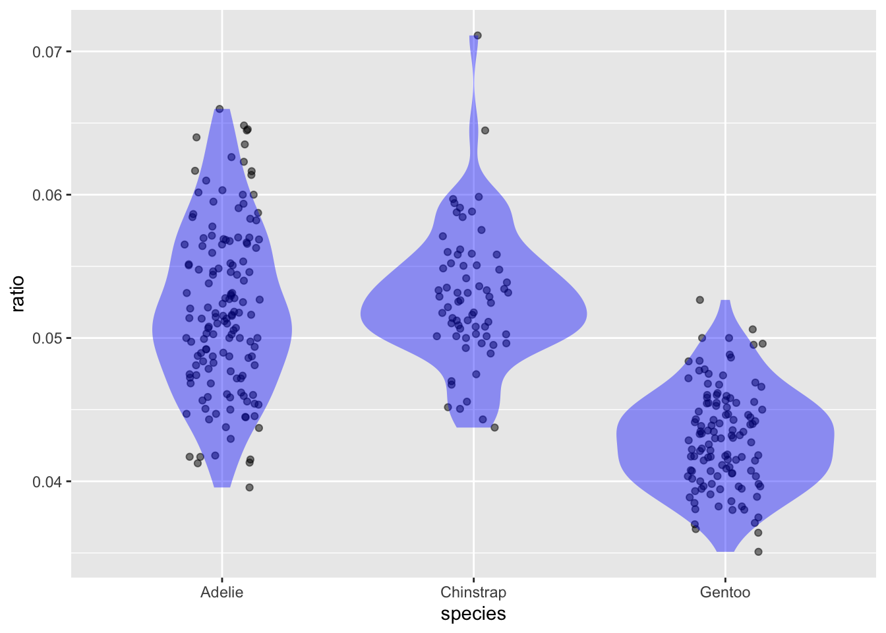

| country | year | GDP | pop |
|---|---|---|---|
| Korea | 2020 | 874 | 32 |
| Cuba | 2020 | 80 | 7 |
| France | 2020 | 1203 | 55 |
| India | 2020 | 1100 | 1300 |
| Korea | 1950 | 100 | 32 |
| Cuba | 1950 | 60 | 8 |
| France | 1950 | 250 | 40 |
| India | 1950 | 300 | 700 |
5 Data wrangling
Data wrangling refers to the organization and construction of simple summaries of data, or preparing data in the more nuanced summaries of statistical models. Traditionally, organizing data has been a complicated task involving extensive computer programming. The style of data wrangling is more modern and much less demanding for the human wrangler. Wrangling takes advantage of the realization made only in the last half century or so that a small set of simple operations can handle a large variety of re-organization tasks. The data scientist is to learn what are these operations and how to invoke them on the computer.
Basic data-wrangling operations
The basic structure of every data wrangling operation is that a data frame is the input and another (possibly) modified data frame is the output. This data-frame-in/data-frame-out organization to be divided among a number of small, simple steps, each step involving taking a data frame from the previous steps and supplying the modified frame it to the subsequent steps.
What are these steps? One is to arrange the rows of a data frame according to a specific criteria. Another is the elimination or filtering of some rows based on a user-specified criteria. Mutate, another operation, adds to a data frame new columns that have been calculated from the original columns. The summarize operation reduces many rows to one, effectively changing the unit of observation. Still another is selecting certain variables from the data frame and discarding the remaining ones.
The Big Five wrangling operations
You will use these throughout the Lessons.
- arrange
- filter
- mutate
- select
- summarize
Others you will see in examples:
- pivot, an example of which is given in this Lesson.
- join, covered in Lesson sec-databases.
Each of these five operations is conceptually, simple and relies only on the human data wrangler specifying the criteria for selection or exclusion, how to calculate new variables from old, or the definition of groups for summarization. We will use these five operations—arrange, filter, mutate, select, and summarize—over an over again in the rest of these Lessons.
Experts in data wrangling learn additional operations. One that we will use occasionally in examples is pivoting, which changes the shape of the data frame without changing its contacts. Another expert operation is called join and involves combining two data frame inputs into a single frame output. Learning about “joins” is important for two reasons. Join is the essential operation for assembling data from different sources Sometimes called “data linkage.”. For instance, research on educational effectiveness combines data from academic testing with income and criminal records. A second important reason for learning about “join” is to understand why related data is often spread among multiple data frames and how to work with such data. We will consider such “relational data bases” in Lesson sec-databases.
Learning how to use and understand the basic operations, particularly the big five, can be accomplished with simple examples. To use the operations, you need only know the name of the operation and what kind of auxilliary input is needed to specify exactly what you want to accomplish. We will demonstrate using a compact, made-for-demo data frame, Nats, that has both categorical and numerical data. (The example is motivated by the famous Gapminder organization that combines nation-by-nation economic, demographic, and health data in a way that illuminates the actual (often counter-intuitive) trends.)
arrange() sorts the rows of a data frame in the order dictated by a particular variable. For example:
Nats |> arrange(pop)| country | year | GDP | pop |
|---|---|---|---|
| Cuba | 2020 | 80 | 7 |
| Cuba | 1950 | 60 | 8 |
| Korea | 2020 | 874 | 32 |
| Korea | 1950 | 100 | 32 |
| France | 1950 | 250 | 40 |
| France | 2020 | 1203 | 55 |
| India | 1950 | 300 | 700 |
| India | 2020 | 1100 | 1300 |
Numerical variables are sorted numerically, categorical variable are sorted alphabetically
For other examples, for instance how to sort in descending order, see Exercise
The filter() function goes row-by-row through its input, determining according to a user-specified criterion which rows will be passed into the output. The criterion is written in R notation, but often this is similar to arithmetic notation. In the following, pop < 40 states the criterion “population is less than 40,” while year == 2020 (notice the double equal signs) means “when the year is 2020.”
Nats |> filter(pop < 40)| country | year | GDP | pop |
|---|---|---|---|
| Korea | 2020 | 874 | 32 |
| Cuba | 2020 | 80 | 7 |
| Korea | 1950 | 100 | 32 |
| Cuba | 1950 | 60 | 8 |
Nats |> filter(year == 2020)| country | year | GDP | pop |
|---|---|---|---|
| Korea | 2020 | 874 | 32 |
| Cuba | 2020 | 80 | 7 |
| France | 2020 | 1203 | 55 |
| India | 2020 | 1100 | 1300 |
For more examples, see
Sometimes the information needed is already in the data frame, but it is not in a preferred form. For instance, Nats has variables about the size of the economy (gross domestic product, GDP, in $billions) and the size of the population (in millions of people). In comparing economic activity between countries, the usual metric is “per capita GDP” which is easily calculated by division. The mutate() function carries out the operation we specify and gives the result a name that we choose. Here’s how to calculate per capita GDP, and store the result under the variable name GDPpercap:
Nats |> mutate(GDPpercap = GDP / pop)| country | year | GDP | pop | GDPpercap |
|---|---|---|---|---|
| Korea | 2020 | 874 | 32 | 27.3125000 |
| Cuba | 2020 | 80 | 7 | 11.4285714 |
| France | 2020 | 1203 | 55 | 21.8727273 |
| India | 2020 | 1100 | 1300 | 0.8461538 |
| Korea | 1950 | 100 | 32 | 3.1250000 |
| Cuba | 1950 | 60 | 8 | 7.5000000 |
| France | 1950 | 250 | 40 | 6.2500000 |
| India | 1950 | 300 | 700 | 0.4285714 |
Pay particular attention to the argument inside the parentheses, GDPpercap = GDP / pop. The = symbol means “give the name on the left (GDP) to the values calculated on the right (GDP / pop). This style of argument, involving the = sign, is called a named argument. In these Lessons = will only ever appear as part of a named argument expressions. One consequence is that = will only appear inside the parentheses that follow a function name.
Data frames often have variables that are not needed for the purpose at hand. In such circumstances, you may discard the unwanted variables with the select() command. Select takes as arguments the names of the variables you want to keep, for instance:
Nats |> select(country, GDP)| country | GDP |
|---|---|
| Korea | 874 |
| Cuba | 80 |
| France | 1203 |
| India | 1100 |
| Korea | 100 |
| Cuba | 60 |
| France | 250 |
| India | 300 |
Alternatively, you can specify the variables you want to drop by using a minus sign before the variable name, as in this calculation:
Nats |> select(-year, -pop)| country | GDP |
|---|---|
| Korea | 874 |
| Cuba | 80 |
| France | 1203 |
| India | 1100 |
| Korea | 100 |
| Cuba | 60 |
| France | 250 |
| India | 300 |
“To summarize” means to give a brief statement of the main points. For the data-wrangling summarize() operation, “brief” means to combine rows. For instance, one summary of the Nats data would be the total population of all the countries.
Nats |> summarize(totalpop = sum(pop))| totalpop |
|---|
| 2174 |
The sum() function used in the above command merely adds up all the values in its input, here pop. summarize() is a data-wrangling operation, while sum() is a simple arithmetic operation. Functions such as sum() are called “reduction functions: they take a variable as input and produce a single value as output. You will be using over and over again a handful of such reduction functions: mean(), max(), min(), median() are probably familiar to you. Also important to our work will be var(), to be introduced in sec-variation, which quantifies the amount of variation in a numerical variable.
The result from the previous command, 2174, is arithmetically correct but is misleading in the context of the data. After all, each country in Nats appears twice: once for 1950 and again for 2020. The populations for both years are being added together. Typically, you would want separate sums for each of the two years. This is easily accomplished with summarize(), using the .by= argument: Notice the period at the start of the argument name: .by =
Nats |> summarize(totalpop = sum(pop), .by = year)| year | totalpop |
|---|---|
| 2020 | 1394 |
| 1950 | 780 |
Note that the output of the summarize operation and has mostly different variable names and the input, in addition to squeezing down the rows, adding them up, touch, summarize retains only the variables used for grouping and discards the others, but adds in columns For the requested summaries.
Compound wrangling statements
Each of the examples in sec-basic-wrangling involved just a single wrangling operation. Often, data wrangling involves putting together multiple wrangling operations. For instance, we might be interested in finding the countries with above average GDP per capital, doing this separately for 1950 and 2020:
Nats |>
mutate(GDPpercap = GDP / pop) |>
filter(GDPpercap > mean(GDPpercap), .by=year) | country | year | GDP | pop | GDPpercap |
|---|---|---|---|---|
| Korea | 2020 | 874 | 32 | 27.31250 |
| France | 2020 | 1203 | 55 | 21.87273 |
| Cuba | 1950 | 60 | 8 | 7.50000 |
| France | 1950 | 250 | 40 | 6.25000 |
Let’s take this R command apart. The high-level structure is
Nats |> mutate() |> filter(), or, more abstractly,
object |> action |> action.
An “object” is something that can be retained in computer storage, such as a data frame. An “action” is an operation that is performed on an object and produces a new object as a result. A great advantage of the pipeline style for commands is that every statement following the pipe symbol (|>) will always be an action, no doubt about it.
For convenience, arithmetic and similar operations can be written in traditional mathematics notation, like this:
3 + 5[1] 8Another way to spot that something like mutate() refers to an action is that the name of the action is directly followed by an opening parenthesis. In R, the pair ( and ) means “take an action.” It’s not used for any other purpose.
Constructing a compound wrangling command involves creativity. Like any creative art, mastery comes with experience, failure, and learning from examples such as those in the Exercises.
Actions and adverbs; functions and arguments
We’ve already mentioned that expressions like mutate() or arrange() refer to actions. A more technical word than “action” is “function”: mutate() and arrange() and many others are functions. The functions we use have names which, in the ideal situation, remind us of what kind of action the function performs. When we write a function name, the convention in these Lessons is to follow the name with a pair of parentheses. This is merely to remind the reader that the name refers to a function as opposed to some other kind of object such as a data frame.
In use, functions generally are written with one or more arguments. The arguments are written in R notation and specify the details of the action. They are always placed inside the parentheses that follow the function name. If there is more than one argument, they are separated by commas. An example:
select(country, GDP)
The action of the select() function is to create a new data frame with the columns specified by the arguments. Here, there are two arguments, country and GDP, which correspond to the two columns that the new data frame will consist of. In English, we might describe select(country, GDP) this way: “Whatever is the input data frame, create an output that has only the specified variables.”
On its own, select(country, GDP) is not a complete command. It is missing an important component for a complete command: which data frame the action will be applied to. To complete the sentence. In the R pipeline grammar, we specify this using the pipe symbol |>, as in Nats |> select(country, GDP).
In terms of English grammar, actions are verbs and statements that modify or qualify the action are adverbs. For example, the English “run” is a verb, an action word. We can modify the action with adverbs, as in “run swiftly” or “run backward.” In R, such verb phrases would be written as function(adverb) as in run(swiftly) or run(backward). When there are multiple adverbs, English simply puts them side-by-side, as in “run swiftly backward.” In R this would be run(swiftly, backward).
The wrangling verbs summarize() and mutate() create columns. It’s nice if those columns have a simple name. You can set the name to be used by preceding the adverb by the name would want followed by an equal sign. Examples: summarize(mn = mean(flipper)) or mutate(ratio = flipper / mass).
Imperatives and objects
In English, a sentence like “Walk the dog!” is an imperative, a command. Similarly, in R, commands are always imperatives. The English imperative sentence, “Jane, walk the dog!” directs the imperative to a particular actor, namely Jane. The R imperative is always directed to “the computer,” as in, “Computer, select the country and GDP columns for the output.”
“Walk the dog!” has both a verb (“walk”) and a noun (“the dog”). The noun in such an imperative is the object of the verb; the entity that the action (walk) is to be applied to.
R structures sentences/commands differently. Every sentence is a command. The actor is always the computer, there’s no reason to state that explicitly. So the imperative in R looks like this:
the_dog |> walk
In word order, the object of the action preceeds the action. In data-wrangling commands, the object is always a data frame.
[]](https://www.youtube.com/embed/hShY6xZWVGE?si=bitLcj6fhMxUiO02)
Click link to play movie clip.
Pivoting (optional)
In an earlier example, we used mutate() to compute a new column called GDPpercap by dividing two existing columns, GDP and pop. With mutate(), it’s easy to do calculations that involve two or more columns within the same row.
Now consider a similar sounding task, computing GDPgrowth by dividing, for each country separately, the 2020 GDP with the 1950 GDP. This cannot be done with a simple mutate() step because the information needed for the calculation is spread over two different rows. A clue to the difficulty is that there are not separate columns named, say, GDP2020 and GDP1950 that could be combined with a mutate() operation.
“Pivoting” is a data wrangling operation that reshapes a data frame. Understanding pivoting is essential for the professional data scientist. But, like the construction of compound wrangling statements in general, mastery comes with experience. You won’t need to master pivot to study these Lessons, but we do use it behind the scenes in some of the demonstrations. Mainly, it’s worthwhile to learn a little about pivoting in order better to appreciate how data wrangling uses a small number of general-purpose operations to accomplish a huge variety of tasks.
Consider a data frame for which you want to turn information in different rows into a format with that information in different columns. That is, we’re going to take information from a single column in the original, and spread it between two (or more) columns in the output from the operation. Adding columns is effectively making a data frame “wider.” We can accomplish the GDPgrowth wrangling by pivoting from “longer” (that is, more rows) to “wider”. Like this:
Nats |> pivot_wider(country, values_from = c(GDP, pop), names_from = year)| country | GDP_2020 | GDP_1950 | pop_2020 | pop_1950 |
|---|---|---|---|---|
| Korea | 874 | 100 | 32 | 32 |
| Cuba | 80 | 60 | 7 | 8 |
| France | 1203 | 250 | 55 | 40 |
| India | 1100 | 300 | 1300 | 700 |
This is a complicated command, so we will break it down argument by argument.
The first argument,
country, specifies the variable values that will label each row in the result. Even thoughcountryhas eight values, there are only four distinct values so the result will have four rows.The second argument,
values_from = c(GDP, pop), tells which columns we are going to make wider. Here, we are creating side-by-side columns for bothGDPandpop.The third argument,
names_from = year, tells what variable in the original will spread of the columns in the second argument. Sinceyearhas two distinct values (1950 and 2020), thevalues_fromcolumns will be split into two columns each. If year had three distinct values (say, 1980 as well as 1950 and 2020), then the splitting would be into three columns for each of thevalues_fromcolumns. :::
The pivoted data contains the same information as the original, but organized differently. The new organization makes it easy to do the GDPgrowth calculation, since now it is just the ratio of two columns:
Nats |>
pivot_wider(country, values_from = c(GDP, pop), names_from = year) |>
mutate(GDP_growth = GDP_2020 / GDP_1950) |>
select(country, GDP_growth)| country | GDP_growth |
|---|---|
| Korea | 8.740000 |
| Cuba | 1.333333 |
| France | 4.812000 |
| India | 3.666667 |
As you might suspect, there is also a pivot_longer() operation, which merges columns rather than spreading them.
Exercises
Exercise 5.1 Q05-108
MAKE THIS AN EXERCISE ON errors and the different sorts of messages that appear.
An error message is not a criticism of you or your work. Ideally, you should see error messages as hints about what’s not yet correct about your command. Reading the error message is essential to being able to make use of the hint. Admittedly, many R error messages are cryptic, but usually they will tell you where in the command lies the problem.
Exercise 5.2 Q05-109
Functions in adverbs
REWRITE THIS INTO EXERCISES
As mentioned previously, a wrangling adverb may be as simple as the name of a variable, or much more complicated, involving both variable names and functions. The English analogy to a complicated wrangling adverb is an adverbial phrase, as in, “Jane runs swiftly as the wind.” (The adverbial phrase is, “swiftly as the wind.”)
It’s important to note that the functions used in a wrangling adverbial phrase are not themselves wrangling verbs. Wrangling verbs alway take a data frame as the first input. In contrast, functions in adverbial phrases usually take a variable or R expression (as in flipper / mass) as the first input.
Adverbial-phrase functions like mean() produce as output a single quantity. So mean(flipper) calculates a single number as output. We will call these “shrinkage” verbs, since they condense a set of values into a single value.
Other adverbial-phrase functions take a set of values and provide as output another set of values. Typical of these are the mathematical functions, for instance, sqrt() or division. You can use either type of adverbial-phrase function with most wrangling verbs, depending on what you are trying to accomplish. Within summarize() however, use only shrinkage verbs.
Groupwise calculations
Exercise 5.3 DC7-1
Each of these tasks can be performed using a single wrangling verb. For each task, write out the wangling step into which a data frame is piped.
Example: Find the average (mean) of a variable named brightness. Answer: summarize(mean(brightness))
- Add a new column, to be named
rate, that is the ratio of two variables, X and Y, for each of the specimens. Answer:mutate(rate = X / Y) - Sort the rows in descending order of a variable named
size. Answer:arrange(desc(size)) - Create a new data frame that includes only those rows that meet the criterion that the value of variable X be positive. Answer:
filter(X > 0) - From a data frame with three categorical variables A, B, & C, and a quantitative variable X, produce an output that has the same specimens but only the variables A and X. Answer:
select(A, X) - From a data frame with three categorical variables A,B, & C, and a quantitative variable X, produce an output named M that contains the maximum value of X over all the cases that have a given combination of A and B. Answer:
summarize(M - max(X), by = c(A, B)
Exercise 5.4 beech-bid-linen
Comparing each of the following pairs of tables, say which one is considered “wider” as described in the chapter (i.e., does not necessarily imply more columns).
- A versus C
- B versus C
- A versus B
Data Table A
| Year | Algeria | Brazil | Columbia |
|---|---|---|---|
| 2000 | 7 | 12 | 16 |
| 2001 | 9 | 14 | 18 |
Data Table B
| Country | Y2000 | Y2001 |
|---|---|---|
| Algeria | 7 | 9 |
| Brazil | 12 | 14 |
| Columbia | 16 | 18 |
Data Table C
| Country | Year | Value |
|---|---|---|
| Algeria | 2000 | 7 |
| Algeria | 2001 | 9 |
| Brazil | 2000 | 12 |
| Columbia | 2001 | 18 |
| Columbia | 2000 | 16 |
| Brazil | 2001 | 14 |
Answer:
- Table A versus C: A is wide, C is narrow.
- Table B versus C: B is wide, C is narrow.
- Table A versus B: They are both the same relative to each other. In a narrow format of data, the cases are more detailed than in the wide format. For instance, table C has cases that are “a country in a year,” which is more detailed than either “year” or “country.”
Exercise 5.5 turtle-hurt-map
Here are the first letters of the names of several data verbs. (Repeated letters are for different verbs.) Complete the name and say briefly what the verb does.
aAnswer:arrange()sorts by rowmAnswer:mutate()computes new columns from existing ones.fAnswer:filtereliminates row that do not meet a specified criterion.sAnswer:select()eliminates columnssAnswer:summarize()calculates summaries across multiple rows.
Exercise 5.6 DC7-2
These questions refer to the ggplot2::diamonds data frame. Take a look at the codebook (using ?ggplot2::diamonds) so that you’ll understand the meaning of the tasks. (Motivated by Garrett Grolemund.)
Each of the following tasks can be accomplished by a statement of the form
ggplot2::diamonds |>
verb1( args1, arg2 ) |>
arrange(arg3) |>
head( 1 )For each task, give appropriate verbs and arguments to substitute in place of verb1, verb2, args1, args2, and args3.
- Which color diamond is the largest on average (in terms of carats)?
Answer:
ggplot2::diamonds |>
summarize(mc = mean(carat), .by = color) |>
arrange(desc(mc)) |>
head(1)| color | mc |
|---|---|
| J | 1.162137 |
- Which clarity of diamond has the smallest average “table” per carat?
Answer:
ggplot2::diamonds |>
summarize(mt = mean(table), .by = clarity) |>
arrange(mt) |>
head(1)| clarity | mt |
|---|---|
| IF | 56.50721 |
Exercise 5.7 DC7-5
The babynames::babynames data frame records, for each year since 1880, the names of babies born in that year and how many babies of each sex were given each name.
Warning
Because the data frame is so large (almost two-million rows!), we will use only a sample of 1000 rows, called Names.
set.seed(102)
Names <- babynames::babynames |> sample(n = 1000) |> select(-prop)Make sure to run the above two lines to create Names.
Here is the first six rows of Names.
| year | sex | name | n |
|---|---|---|---|
| 2004 | M | Arjun | 250 |
| 1894 | F | Fedora | 5 |
| 1952 | F | Donalda | 10 |
| 1990 | F | Josie | 363 |
| 1963 | M | Armand | 96 |
| 1996 | F | Tiffani | 576 |
Each of a-e shows a random part of wrangling output when the input is Names. Your task is to reconstruct the wrangling command to produce that output. (Hint: The total number of rows in the output can be an important clue.)
- Output table A (Only the
head()of the table is shown.)
| year | sex | name | n |
|---|---|---|---|
| 1894 | F | Fedora | 5 |
| 1952 | F | Donalda | 10 |
| 1990 | F | Josie | 363 |
| 1996 | F | Tiffani | 576 |
| 1980 | F | Teon | 5 |
| 2001 | F | Alexya | 35 |
Answer: Names |> arrange(sex) |> head()
- Output table B
| year | sex | name | n |
|---|---|---|---|
| 1894 | F | Fedora | 5 |
| 1952 | F | Donalda | 10 |
| 1990 | F | Josie | 363 |
| 1996 | F | Tiffani | 576 |
| 1980 | F | Teon | 5 |
| 2001 | F | Alexya | 35 |
Answer: Names |> filter(sex == "F") |> head()
- Output table C
| year | sex | name | n |
|---|---|---|---|
| 2001 | M | Lynwood | 8 |
| 2001 | M | Owais | 6 |
| 2001 | M | Mary | 13 |
| 2001 | M | Spence | 17 |
| 2001 | M | Seneca | 27 |
| 2002 | M | Jailon | 25 |
Answer: Names |> filter(sex == "M", year > 2000) |> arrange(year) |> head()
- Output table D (All of the table is shown.)
| sex | total |
|---|---|
| M | 52071 |
| F | 91940 |
Answer: Names |> summarize(total = sum(n), .by = sex)
- Output table E (All of the table is shown.)
| year | sex | total |
|---|---|---|
| 2016 | F | 763 |
| 2016 | M | 103 |
| 2017 | F | 59 |
| 2017 | M | 48 |
Answer:
Names |>
filter(year > 2015) |>
summarize(total = sum(n), .by = c(year, sex)) |>
arrange(year)
Exercise 5.8 DC7-9
Of the several data wrangling operations that take a single data frame as input, there is only one that can change the unit of observation. Which one?
Answer:
summarize(). The other basic wrangling functions may discard rows (filter()) or columns (select(), mutate()) or the order of the rows (arrange()), but each row still refers to an original specimen. In the output of summarize(), on the other hand, each row refers to multiple specimens: a set of specimens rather than a single specimen.
Exercise 5.9 DC7-11
Imagine a data frame, Patients, with categorical variables name, diagnosis, sex, and quantitative variable age. Consider this data wrangling operation:
Patients |>
summarise(count=n(), meanAge = mean(age),
.by = c(**some variables**))Replacing some variables with each of the following, tell what variables will appear in the output
sexAnswer:count,meanAge,sexdiagnosisAnswer:count,meanAge,diagnosissex, diagnosisAnswer:count,meanAge,sex),diagnosisage, diagnosisAnswer:count,meanAge,age),diagnosisageAnswer:count,meanAge,age
Exercise 5.10 boy-become-rug
Identify each of these functions as either a Wrangling verb, a Transformation, a Reduction Function, or a Summary Function. (Hint: If you are unfamiliar with the function, use help().)
str()Answer:str()Summary Functionrank()Answer:rank()Transformationmean()Answer:mean()Reduction functionfilter()Answer:filter()Wrangling verbsummary()Answer:summary()Summary Functionsummarise()Answer:summarise()Wrangling verbglimpse()Answer:glimpse()Summary Function
Exercise 5.11 DC10-3
Here are three data frames, A, B, and C, with different organizations of the same data.
Format A
| Year | Algeria | Brazil | Columbia |
|---|---|---|---|
| 2000 | 7 | 12 | 16 |
| 2001 | 9 | 14 | 18 |
Format B
| Country | Y2000 | Y2001 |
|---|---|---|
| Algeria | 7 | 9 |
| Brazil | 12 | 14 |
| Columbia | 16 | 18 |
Format C
| country | year | value |
|---|---|---|
| Algeria | 2000 | 7 |
| Algeria | 2001 | 9 |
| Brazil | 2000 | 12 |
| Columbia | 2001 | 18 |
| Columbia | 2000 | 16 |
| Brazil | 2001 | 14 |
- What are the variables in each table?
- What is the meaning of a case for each table? Here are some possible choices.
- A country
- A country in a year
- A year
Answer:
- The variables are:
- Table A: Year, Algeria, Brazil, Columbia
- Table B: Country, Y2000, Y2001
- Table C: Country, Year, Value
- The cases are:
- Table A: a year
- Table B: a country
- Table C: a country in a year
- Which data-frame format do you think would make it easiest to find the change from 2000 to 2001 for each country? How would you do it?
Answer:
Format B is the easiest for calculating the change from 2000 to 2001. All you need is to subtract the two columns:
Format_B |> mutate(change = Y2001 - Y2000)
Exercise 5.12 wrangling-lifetables-infant
The data frame babynames::lifetables lists so-called “life tables” in the US for the years 1900 to 2010.
Warning
Use ?babynames::lifetables to look at the documentation for the data frame (which isn’t really about names of babies). If you get an error, install the babynames package using this command: install.packages("babynames").
Life tables are constructed each calendar year from this basic data: the number of people of each age and the number of deaths of such people in the calendar year. For babynames::lifetables, the year is called year, the age is called x, and the proportion of people of age x who died in that year is called qx.
“Infant mortality” is defined as the death of an infant in the first age-year of life. The “infant mortality rate” is the proportion of such infants who die at age x == 0.
Task 1: Wrangle the babynames::lifetables data frame to produce a data frame that has only those rows where x == 0, then plot the infant mortality rate (that is, qx) versus year. Represent sex with color and/or faceting.
Answer:
babynames::lifetables |>
filter(x == 0) |>
point_plot(qx ~ year + sex)
Task 2: “Child mortality” is defined to be the probability of a child dying before age 5. The “child mortality rate” can be calculated (approximately) by adding together the probabilities for age 0, 1, 2, 3, and 4 years. Write a wrangling statement to produce a variable giving the child mortality rate (call it cmr) for each calendar year individually, then plot qmd versus year, using color and/or faceting to represent sex.
Answer:
babynames::lifetables |>
filter(x < 5) |>
summarize(qmr = sum(qx), .by = c(year, sex)) |>
point_plot(qmr ~ year + sex)
Note: The precise definition of child mortality is not sum(qx) but 1 - prod(1-qx).
Exercise 5.13 bird-swim-fog
Each of the following data frames is the result of a wrangling the LSTbook::Wheat. Your job is to construct a wrangling statement which reproduces the output shown. The statement might have more than one step.
A. Reproduce the wrangling statement to generate …
| block | mean(yield) |
|---|---|
| 1 | 6.235536 |
| 2 | 6.346607 |
| 3 | 6.218393 |
Answer:
Wheat |> summarize(mean(yield), .by = block)B. Reproduce the wrangling statement to generate …
| plot | block | yield |
|---|---|---|
| 181 | 3 | 5.35 |
| 181 | 3 | 6.11 |
Answer:
Wheat |> filter(plot == 181) |> select(plot, block, yield)C. Reproduce the wrangling statement to generate …
| sum(yield) |
|---|
| 1052.83 |
Answer:
Wheat |> summarize(sum(yield))
Exercise 5.14 knife-cuts-butter
This compound wrangling expression is meant to display the countries with above-average GDP, separately for each of the years in the data. It does not work because of a seemingly small mistake involving .by. Fix it.
Nats |>
mutate(GDPpercap = GDP / pop, .by=year) |>
filter(GDPpercap > mean(GDPpercap)) Answer:
The .by = year argument is being used in mutate(). This is pointless because there are no reduction functions used in the mutate() step. The .by = year argument should be placed in the wrangling steps where reduction functions are used. In this case, that’s the filter() step.
Exercise 5.15 Q05-101
As you know, we distinguish between two types of calculation done in a mutate() or summarize() statement:
Calculations using transformation functions that take a variable as input and return as output a variable with the same number of rows.
Calculations using reduction functions that turn the input variable into a single value.
When your memory fails you, there’s an easy test to determine whether any given function is a reduction or a transformatioh. Using mutate(), apply the function to a variable. If the results are all the same for every row, then you are working with a reduction function. For instance, mean() is a reduction function:
Tiny |> mutate(X = mean(flipper)) |> select(X)| X |
|---|
| 205.125 |
| 205.125 |
| 205.125 |
| 205.125 |
| 205.125 |
| 205.125 |
| 205.125 |
| 205.125 |
On the other hand, sqrt() is a transformation function.
Tiny |> mutate(X = sqrt(flipper)) |> select(X)| X |
|---|
| 14.17745 |
| 14.00000 |
| 15.09967 |
| 14.79865 |
| 13.74773 |
| 15.09967 |
| 13.74773 |
| 13.82028 |
Using this technique, determine for each of these functions whether it is a reduction function or a transformation function.
var()Answer: reductionn_distinct()Answer: reductionmax()Answer: reductioncos()Answer: transformationmedian()Answer: reductionsd()Answer: reduction
Exercise 5.16 Q05-102
Explain why the values in the count variable of the output is different between these two similar-looking R commands:
Tiny |> summarize(count = n_distinct(species))| count |
|---|
| 3 |
Tiny |> summarize(count = n_distinct(species), .by = species)| species | count |
|---|---|
| Chinstrap | 1 |
| Adelie | 1 |
| Gentoo | 1 |
Answer:
There are three distinct species in Tiny. The first command treats Tiny as a single unit, but the second command breaks up Tiny into three different groups as defined by the species. Within each of these three groups, there is only one species.
Exercise 5.17 Q05-106
There’s an interesting pattern shown in this plot which shows the number of births in the US for each day of 1980:
Births |> filter(year %in% c(1980)) |>
point_plot(births ~ date + wday) 
- The points split into two main groups based on the number of births each day. Explain in everyday terms what’s going on.
- There are some low-birth dates that are not weekends. Use wrangling to pull out those dates.
Exercise 5.18 Q05-107
The n() adverbial wrangling shrinkage function counts the number of rows. It is unusual in that it doesn’t need any input; it is counting rows, not values in a variable.
- There is a simple relationship between the
rowscolumn in these two statements. What is that relationship? (Tiny is a small sample of thePenguinsdata frame.Bigis a bigger sample.)
Tiny |> summarize(rows = n())| rows |
|---|
| 8 |
Tiny |> summarize(rows = n(), .by = species)| species | rows |
|---|---|
| Chinstrap | 2 |
| Adelie | 3 |
| Gentoo | 3 |
- Replace
TinywithBigin your wrangling statements and explain if your answer to (1) still holds up.
Exercise 5.19 Q05-103
Using the .by=variable argument in wrangling verbs causes the wrangling operation to be done separately for each of the groups of rows defined by the variable.
Here are two ways you might re-arrange the rows of Tiny, which is a very small subset of Penguins that’s easy to look at in one glance.
Tiny |> arrange(mass, .by=species)
Tiny |> arrange(species, .by=mass)Run both commands and observe how the outputs differ from one another. Give a brief explanation of what features of the Tiny data cause them to differ in the order of the rows.
Exercise 5.20 wrangling-penguins
Suppose you are tasked to create a new data frame out of the dataframe Penguins that has a ratio column given flipper / mass for each penguin.
Should you use
mutate()orsummarize()to create the new data frame? Answer: Usemutate(). You’re creating a new column with the same rows as in the original: one for each penguin.Do the wrangling to create
ratio, then usepoint_plot()to graphratio ~ specieswith a violin annotation.
Answer:
Penguins |>
mutate(ratio = flipper / mass) |>
point_plot(ratio ~ species, annot = "violin")
Reading the graph you created in (b), say which species tends to have the lowest ratio of flipper length to mass. Answer: Although there is some overlap with the other two species, Gentoo penguins tend to have the lowest ratio.
Form the wrangling command to calculate the mean and variance of
ratiofor each species of penguin.
Answer:
{rlabel='wrangling-penguinsoH2Dfx', } Penguins |> mutate(ratio = flipper / mass) |> summarize(mean(ratio), var(ratio), .by = species)
Exercise 5.21 fir-shut-sofa
Often, a data scientist needs to calculate some new quantity from the quantities already available in a data table. Proper data computing software makes this easy to do in a manner that is clear even to an inexperienced reader. For example, the following statement will take a data table named Fatality_data with the structure of Table tbl-pine-hit-pants (in Exercise Exercise 1.9) and augment it with a new variable total_fatalities that gives the total number of fatalities in each year.
FARS <-
FARS |>
mutate(total_fatalities = drivers + passengers + unknown)
FARSThe mutate() function does the work of creating the new variable. The text between the opening parenthesis and the corresponding closing parenthesis is the argument to mutate(), which gives the specifics of what to do.
For each of the following, write the argument for a mutate() statement that will produce the desired new variable. You can assume that total_fatalities is already one of the existing variables. (We created it above!)
- Fatalities per crash.
Answer:
fatalities_per_crash = total_fatalities / crash- Fatalities per million vehicle miles.
Answer:
fatalities_per_distance = total_fatalities / (miles * 1000)Divide the total number of fatalities by the number of vehicle miles travelled.
Why the multiplication by 1000? Recall that miles is in billions of vehicle miles, while we want the units of fatalities_per_distance to be fatalities per million vehicle miles. The 1000 performs the conversion from billions to millions.
- Number of crashes per million vehicle miles.
Answer:
crashes_per_distance = crashes / (miles * 1000)- Referring back to the original data shown in Figure fig-bear-ride-pants1 (in Exercise Exercise 1.1), you can see that the calculation of total fatalities in the introduction to this problem left out the number of motorcyclist and nonmotorist fatalities. Modify the calculation of total fatalities to include these, assuming they are represented by
motorcyclistandnonmotoristrespectively.
Answer:
total_fatalities = drivers + passengers + unknown +
motorcyclist + nonmotorist
Exercise 5.22 rabbit-spend-radio
The spreadsheet SDSdata::FARS contains, in tidy form, the data published by the US Department of Transportation Fatality Analysis Reporting System (FARS). Each row is a year. The data in FARS span 1994 to 2016.
Look at the codebook for FARS and make sure you understand the meaning of the variables and the units in which each is reported.
- Calculate the total number of motor-vehicle related driver fatalities over the years. Call this
total_drivers. - Calculate the total number of vehicle miles over the years. Call this
total_vehicle_miles. - Calculate the fatalities per distance rate from (1) and (2), making sure that your result has units fatalities per million vehicle miles. What is the value you got.
- Make a one-line change in your calculation to find quantity (3), but only over the five-year period 2012-2016.
Answer:
SDSdata::FARS |>
# filter(year >= 2012, year <= 2016) |>
summarise(total_drivers = sum(drivers),
total_vehicle_miles = sum(vehicle_miles)) |>
mutate(fatalities_per_distance =
total_drivers / total_vehicle_miles)| total_drivers | total_vehicle_miles | fatalities_per_distance |
|---|---|---|
| 474979 | 65526 | 7.24871 |
For parts (1)–(3), don’t include the filter() line. For part (4), do include the filter() line.
Exercise 5.23 DC7-6
The city of Minneapolis, Minnesota was one of the first to try “ranked choice” voting. In an ordinary election, each voter selects one candidate. In contrast, in ranked-choice voting, the voter selects a first choice, a second choice, and a third choice.
The LSTdata::Minneapolis2013 data frame records the votes from the 2013 mayoral election.
In tallying up the ballots, the first-choice candidates are tallied. If one candidate has a majority, she wins. If not, then the candidate with the smallest number of first-choice votes is eliminated. Any ballots marked with that candidate have the eliminated candidate struck out, and remaining candidates on that ballot are moved up one choice. This process is repeated over and over until one candidate has a first-choice majority.
- How many ballots are there?
Answer:
Minneapolis2013 |> nrow()[1] 80101- Who were the top 5 candidates in the Second vote selections?
Answer:
Minneapolis2013 |>
summarize(count = n(), .by = Second) |>
arrange(desc(count)) |>
filter(Second != "undervote") |>
head(5)| Second | count |
|---|---|
| BETSY HODGES | 14399 |
| DON SAMUELS | 14170 |
| MARK ANDREW | 12757 |
| JACKIE CHERRYHOMES | 6470 |
| BOB FINE | 3751 |
- How many ballots are marked “undervote” in
- First choice selections?
- Second choice selections?
- Third choice selections?
Answer:
Minneapolis2013 |>
summarize(first = sum(First == "undervote"),
second = sum(Second == "undervote"),
third = sum(Third == "undervote"))| first | second | third |
|---|---|---|
| 834 | 10598 | 19210 |
- What are the top 3 combinations of First and Second vote selections? (That is, of all the possible ways a voter might have marked his or her first and second choices, which received the highest number of votes?)
Answer:
Minneapolis2013 |>
summarize(count = n(), .by = c(First, Second)) |>
arrange(desc(count)) |>
head()| First | Second | count |
|---|---|---|
| BETSY HODGES | MARK ANDREW | 8787 |
| BETSY HODGES | DON SAMUELS | 8743 |
| MARK ANDREW | BETSY HODGES | 6970 |
| MARK ANDREW | undervote | 3889 |
| DON SAMUELS | BETSY HODGES | 3346 |
| MARK ANDREW | DON SAMUELS | 2880 |
- Which
Precincthad the highest number of ballots cast?
Answer:
Minneapolis2013 |>
summarize(count = n(), .by = Precinct) |>
arrange(desc(count)) |>
head()| Precinct | count |
|---|---|
| P-06 | 9711 |
| P-02 | 9551 |
| P-08 | 9430 |
| P-03 | 8703 |
| P-05 | 8490 |
| P-07 | 8104 |
Drafts of exercises
Exercise 5.24 Q05-110
DRAFT
Explain why reduction functions like mean(), sum(), max(), and so on are NOT data-wrangling operations even though they are often used in wrangling commands. (Hint: data-wrangling operations always take a data frame as input and produce a data frame as output. What do reduction functions take as input and what do they produce as output?)
Answer:
Reduction functions take a variable as input and produce a single value as output. Neither the input nor the output is a data frame, as required for wrangling functions.
Exercise 5.25 Q05-111
DRAFT
Reconstruct the main body of the tabular report in Figure fig-shipping-losses from the data frame Shipping_losses.
Exercise 5.26 Q05-112
DRAFT Shrinkage verbs
WE ARE CALLING these “reduction functions” ….
Much of the time when we use mutate(), we are generating a new variable out of those already in the data frame. All sorts of mathematical and character transformations are available. For instance, the KidsFeet data frame records the length and width of 39 third- and fourth-grade children. If we would like to work with the aspect ratio of the feet, which is length divided by width, mutate() will do the work for us.
KidsFeet |>
mutate(aspect = length / width)| sex | length | width | aspect |
|---|---|---|---|
| B | 26.1 | 9.1 | 2.87 |
| B | 24.5 | 9.7 | 2.53 |
| B | 23.6 | 9.0 | 2.62 |
| G | 26.0 | 9.0 | 2.89 |
| G | 24.5 | 9.0 | 2.72 |
mutate() with a transformation that works on each row individually.
This Lesson introduces transformations of a different kind, some of which you are already familiar with. We will call these “shrinkage” transformations because, rather than dealing with the data frame rows one at a time, these transformations work on the rows collectively.
Perhaps the simplest shrinkage transformation is averaging. An average, of course, combines (shrinks) many numerical values to give a single representative one. Two examples of averages are the mean and median. When mutate() encounters a shrinkage transformation of this sort, it inserts the same value for all of the rows. You can think of mean or median as shrinking the range of values of its argument into a single number.
KidsFeet |> mutate(mean(length))| sex | length | width | mean(length) |
|---|---|---|---|
| B | 26.1 | 9.1 | 24.9 |
| B | 24.5 | 9.7 | 24.9 |
| B | 23.6 | 9.0 | 24.9 |
| G | 26.0 | 9.0 | 24.9 |
| G | 24.5 | 9.0 | 24.9 |
Usually, we prefer to give column names that are short and have no special characters. To accomplish this, use named arguments to mutate(). The names are up to you. Here’s an example:
KidsFeet |> mutate(mlen = mean(length))| sex | length | mlen |
|---|---|---|
| B | 26.1 | 24.9 |
| B | 24.5 | 24.9 |
| B | 23.6 | 24.9 |
| G | 26.0 | 24.9 |
| G | 24.5 | 24.9 |
Two function families
To a very great extent, the functions you work with will belong to one of two families, the family being identified by the type of information object expected for the first argument (input). These are:
- Functions whose first argument must be a data frame. Usually, a preceeding pipe
|>inserts the data frame into the function. Examples:point_plot()which you met in Lesson sec-point_plots;summarize()and several other “data wrangling” functions you will meet in the next Lessons such asfilter(),select(), andmutate(). - Functions where the first argument is a variable from a data frame, or some arithmetic or similar combination of variables. Examples:
n_distinct(), andmean(), as well asmedian(),var(),sd(), and a handful of other statistics-related functions.
We will use a short subsample of the
KidsFeet data for the purposes of demonstration.:::
Exercise 5.27 Q05-113
DRAFT
I want to do some things with babynames, but I have to keep them simple.
NOTE IN DRAFT: Move this to a section for more advanced exercises: perhaps Mini-Projects.
See Z-cat-wear-canoe.qmd
Exercise 5.28 Q05-114
DRAFT
Compute the mother’s weight gain during pregnancy as indicated by natality2014::Natality_2014_100k and graph it versus baby’s weight dbwt. Is there an obvious relationship between the two variables? CHANGE THIS TO Births2022 where the variables are weight_pre, weight_delivery, weight.
Exercise 5.29 Q05-115
DRAFT
Average family size from the child’s point of view and from the households point of view.
Exercise 5.30 Q05-116
DRAFT
Parents is just one of the reasonable formats for storing the parent data. Another perfectly good format would have the unit of observation be an individual parent rather than a mother/father pair.
Parent (singular) data frame where the unit of observation is an individual parent.
Exercise 5.31 Q05-104
SORTING EXERCISES, including sorting in descending order.
Exercise 5.32 Q05-105
FILTERING EXERCISES
Include %in%
Exercise 5.33 panda-sleep-cotton
Consider the following forms for organizing a subset of the babynames::babynames.
| name | sex | year | nbabies |
|---|---|---|---|
| Mildred | F | 1912 | 8764 |
| Jennie | F | 1912 | 1595 |
| Elisa | F | 1912 | 39 |
| Mildred | M | 1912 | 22 |
| Jennie | M | 1912 | 6 |
| Elisa | F | 2012 | 848 |
| Mildred | F | 2012 | 63 |
| Jennie | F | 2012 | 61 |
| Elisa | M | 2012 | 5 |
| name | year | F | M |
|---|---|---|---|
| Elisa | 1912 | 39 | 0 |
| Elisa | 2012 | 848 | 5 |
| Jennie | 1912 | 1595 | 6 |
| Jennie | 2012 | 61 | 0 |
| Mildred | 1912 | 8764 | 22 |
| Mildred | 2012 | 63 | 0 |
| name | sex | 1912 | 2012 |
|---|---|---|---|
| Elisa | F | 39 | 848 |
| Elisa | M | 0 | 5 |
| Jennie | F | 1595 | 61 |
| Jennie | M | 6 | 0 |
| Mildred | F | 8764 | 63 |
| Mildred | M | 22 | 0 |
Do all three forms represent the same set of facts? Answer: Yes. For instance, from all three forms you can see that in 1912 there were 8764 baby girls and 22 baby boys given the name Mildred.
What is the meaning of a row in each of the tables?
- Version One Answer: A name given to babies of a specific sex in a specific year
- Version Two Answer: A name in a year
- Version Three Answer: A name given to a sex
Which form of table makes it easiest to calculate the ratio of male to female in each name in each year? Answer: For Two. A simple application of
mutate()can calculate the ratio.There are no zeroes in Version One, but there are in Versions Two and Three. Why? Answer: In version Two, there is a slot for every combination of name and year and sex, even when the count of babies is zero, whereas version One only has slots for non-zero counts of the count of babies.
Version Three was “spread” from Version One. What variable sets the spread columns? Answer:
year
Exercise 5.34 kid-bend-dish
Use the DataComputing::ZipGeography and DataComputing::ZipDemography data tables to create these graphics.
- Call a ZIP code “crowded” when the population is over 50,000. Make a point plot showing the geographic location of the crowded ZIPs.
- Pick out the 10,000 zip codes with the highest population. Make a point plot of the latitude versus longitude. (Hints:
arrange()andhead().) Use color to represent the fraction of the population that is over 65.
- How many zip codes have a
WaterAreathat is more than 50% of theLandArea? Make a point plot showing the geographical location of these, with color indicating the population.
Exercise 5.35 doe-dream-room
Using the DataComputing::ZipGeography data table, answer the following questions. In addition to the answer itself, show the statement that you used and the data table created by your statement that contains the answer.
- How many different counties are there? (Hint: Use
n_distinct()withinsummarize(), but be careful what variable(s) you group by.) - Which city names are used in the most states?
- Identify cities that include more than 5% of their state population; which of those city names are used in the most states?
- Does any state have more than one time zone?
- Does any city have more than one time zone?
- Does any county have more than one time zone?
Exercise 5.36 seaweed-tug-kayak
Imagine a data table, Patients, with categorical variables name, diagnosis, sex, and quantitative variable age.
You have a statement in the form
Patients %>%
summarise(count = n(), meanAge = mean(age),
.by = **SOME_VARIABLES**)Replacing **SOME_VARIABLES** with each of the following, tell what variables will appear in the output
sexdiagnosis- c(
sex,diagnosis) - c(
age,diagnosis) age
Answer:
The variables given as arguments to .by = will always appear in the output, along with whatever variables are created by summarise().
sex,count,meanAgediagnosis,count,meanAgesex,diagnosis,count,meanAgeage,diagnosis,count,meanAgeage,count,meanAge
Exercise 5.37 snail-sing-knife
Each of these tasks can be performed using a single data verb. For each task, say which verb it is:
- Add a new column that is the ratio between two variables. Answer:
mutate() - Sort the cases in descending order of a variable.Answer:
arrange() - Create a new data table that includes only those cases that meet a criterion. Answer:
filter() - From a data table with three categorical variables A, B, & C, and a quantitative variable X, produce an output that has the same cases but only the variables A and X. Answer:
select() - From a data table with three categorical variables A, B, & C, and a quantitative variable X, produce an output that has a separate case for each of the combinations of the levels of A and B. Answer:
summarise()using.by = c(A, B)
Exercise 5.38 squirrel-by-rug
TITLE GOES HERE: Here is a reminder of what the BabyNames data frame looks like. Take this table as the input to the data wranging statement you will construct.
| year | sex | name | n | prop |
|---|---|---|---|---|
| 2004 | M | Arjun | 250 | 0.0001184 |
| 1894 | F | Fedora | 5 | 0.0000212 |
| 1952 | F | Donalda | 10 | 0.0000053 |
| 1990 | F | Josie | 363 | 0.0001767 |
| 1963 | M | Armand | 96 | 0.0000465 |
| 1996 | F | Tiffani | 576 | 0.0003005 |
| 1921 | M | Damus | 5 | 0.0000044 |
| 1980 | F | Teon | 5 | 0.0000028 |
| 2001 | F | Alexya | 35 | 0.0000177 |
| 2014 | F | Aranxa | 5 | 0.0000026 |
For each of the following outputs, identify the data verb linking the input to the output and write down the details (i.e., arguments) of the operation. (Hints: Look at the number of cases. The order of variables may also be a clue.)
- Output Table A
| year | sex | name | n | prop |
|---|---|---|---|---|
| 1894 | F | Fedora | 5 | 0.0000212 |
| 1980 | F | Teon | 5 | 0.0000028 |
| 2014 | F | Aranxa | 5 | 0.0000026 |
| 1952 | F | Donalda | 10 | 0.0000053 |
| 2001 | F | Alexya | 35 | 0.0000177 |
| 1990 | F | Josie | 363 | 0.0001767 |
| 1996 | F | Tiffani | 576 | 0.0003005 |
| 1921 | M | Damus | 5 | 0.0000044 |
| 1963 | M | Armand | 96 | 0.0000465 |
| 2004 | M | Arjun | 250 | 0.0001184 |
- Output Table B
| year | sex | name | n | prop |
|---|---|---|---|---|
| 1894 | F | Fedora | 5 | 0.0000212 |
| 1952 | F | Donalda | 10 | 0.0000053 |
| 1990 | F | Josie | 363 | 0.0001767 |
| 1996 | F | Tiffani | 576 | 0.0003005 |
| 1980 | F | Teon | 5 | 0.0000028 |
| 2001 | F | Alexya | 35 | 0.0000177 |
| 2014 | F | Aranxa | 5 | 0.0000026 |
- Output Table C
| year | sex | name | n | prop |
|---|---|---|---|---|
| 2004 | M | Arjun | 250 | 0.0001184 |
| 1963 | M | Armand | 96 | 0.0000465 |
| 1921 | M | Damus | 5 | 0.0000044 |
- Output Table D
| total |
|---|
| 348120517 |
- Output Table E
| name | n |
|---|---|
| Arjun | 250 |
| Fedora | 5 |
| Donalda | 10 |
| Josie | 363 |
| Armand | 96 |
| Tiffani | 576 |
| Damus | 5 |
| Teon | 5 |
| Alexya | 35 |
| Aranxa | 5 |
Answer:
arrange(sex, n)filter(sex == "F")filter(sex == "M", n > 10)summarise(total = sum(n))select(name, n)